Auto-Encoder for Anomaly Detection
This page is less technical than the Jupyter notebook, but still assumes familiarity with CNNs.
Project Goals and Motivation: Expanding our tool belt
This project explores tools (classifiers and auto-encoders) as alternatives to traditional computer vision tools. In particular, I will be detecting the presence of welds on a part. This is not necessarily a better approach for this application, but it adds tremondous power in the right circumstances. For our purposes, it will make a good case-study as I describe the technology and some of the advantages/disadvantages of this technique. I'll focus far more on the auto-encoder, simply because classifiers are so prevalent.
For this application, I wanted to answer a few questions:
- Could a program be created that didn't need any specific knowledge of the features being detecting? If so, the program could generalize to new applications, with changes isolated to training data and hyperparameters.
- Could a model be trained with a small dataset (~150 images). Deep learning has a reputation of requiring large amounts of data, but given how well controlled these images are, it seemed plausible.
- Can problems/anamolies be detected, even if they were not explicitly anticipated during training?
Simple Detection / Binary Classification
Binary Classification is the obvious choice for determining the presence of a specific feature/defect, since it is effectively a binary classification problem. I wrote it for a slightly different shaped data-set, but for confidentiality reasons (the dataset was based on an unreleased product from a previous job), I won't share those images here. Rather than re-wrinting it for the weld data I'll be sharing below, I created another data set with pictures of a stuffed Totoro (from the beloved Miyazaki movie). This also has the advantage of showing a much more varied / difficult dataset.
The program makes good use of Tensorflow tools that greatly simplify data loading and augmentation. If I were to repeat this project, I would use transfer learning with an established model, such as VGG-16, and just freeze the last few layers. I did something similar in this project.
Feel free to look through that notebook for details, though we'll spend the rest of this page discussing the auto-encoder application. 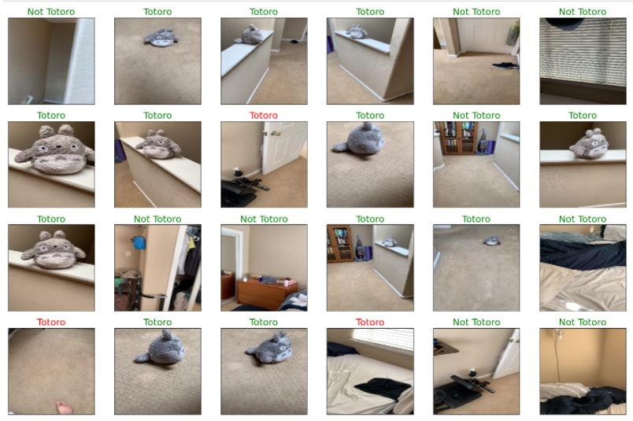What is an Auto-encoder?
An auto-encoder is a FeedForward CNN (Convolutional Neural Network) that compresses an image into a small hidden layer, sometimes called a latent space, and then reverses that operation to restore the original image. The act of encoding the image data into a lower dimensional space is what lends the model its name.
Compression and Specialization: This latent space is a compressed version of that image. This compression can be much more efficient than traditional methods, though it is highly specialized to the type of data it has trained on. Imagine a highly trained musician looking at a piece of music. In a glance, they can learn a lot about that piece, remembering the music much more effectively than a person without that training. A doctor might similarly understand a brain-scan with a glance. However, the highly trained musician does not have any skill to help them memorize brain scans. Both are highly trained, and highly specialized.
Lossy images High compression ratio is an excellent benefit; however, it comes at the price of being a lossy compression model. That means that even a very good model will not remember/recreate the original image perfectly. From our previous example, the musician who glanced at a piece of music might be able to play parts of the piece well, but they might play chords in a slightly different way or improvize parts. Futhermore, when that musician tries to recreate the brain scan, they will probably miss most of the important information. This means that when an image is restored, it will be able to approximate the original image, rebuilding it with the features we've observed, but failing how understanding how to reconstruct anything else. While this may sound like a limitation, it's actually the first step to distinguishing different types of information in our image.
Lossy Compression (using well specialized features)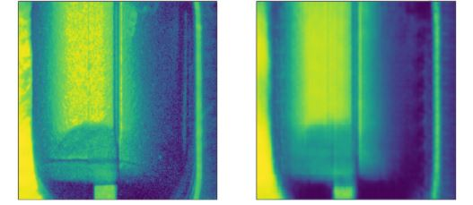
Loss Compression (using poorly specialized feature, which almost completely drops the weld feature)
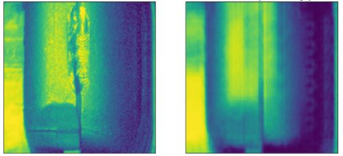
Denoising: Using the fact that our models are lossy and specialized, we can start doing something really interesting. We can start remembering only the things that matter to us. One common application of this is to train a model on very clean images, so that it starts to learning a set of underlying patterns/symbols. After that is trained, feed it noisy data. Because it has learned to understand the signal, but not the noise, it saves the clean data, and doesn't have the ability to remember the specifics of the random noise. When this image is decompressed, the noise has disappeared, and the image has been denoised. Keras has a simple example that shows how powerful this can be, even with VERY noisy images. 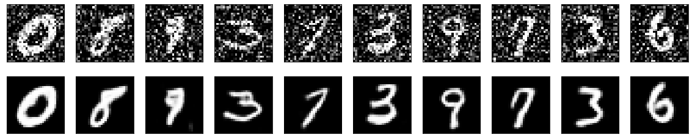
Anomaly Detection: Similarly, I can train a model to remember a nominal image, representing all the features we hope to see. This model learns to reproduce only the features we've taught it about. Now, if new feature appears in an image, our latent space in unable to save it. As a result, we regenerate it incorrectly, producing junk or trying to create the object using the features that we trained on. Finally, we just compare this new image to the original, and we can isolate any poorly reproduced portions, building a heat map of foreign features in a scene. 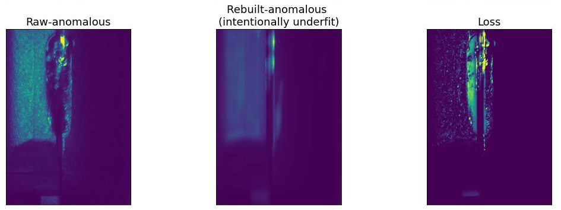
As you can see, the output of the loss function is a heat map of the anomalous parts of the image. Since this model trained on unwelded data, welds are showing up as anomalies. We've effectively generated a heat-map of how much each image looks like a weld. If I was still working with my old welding team, I would love to learn more about what makes a "good" weld, so we could create metrics to quantify weld "quality".
Theoretical side-note: This output looks very similar to the output of a segmentation problem. However, there are a few notable differences. In true segmentation, the output would be an image of labeled classes. In contrast, we've applied the loss function to generate a real-valued image. However, in both cases, we have effectively highlighted the weld region.
A key difference is that the segmentation problem requires labeled data, whereas this technique does not. Technically, we just re-use the input image as the label, though nothing needs to be generated externally. This is one of the few applications I'm aware of in which deep learning is used as an unsupervised model. It requires a bit of post-processing, but in return, we gain a way to find ANY outliers, not just data that vary in the direction of a pre-labeled classes.
The processing pipeline:
- Pre-Processing:
- Load images (false color heat maps are used instead of grayscale) 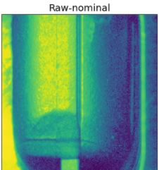 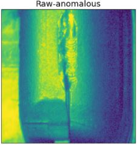
- resize images
- Convert BGR to RGB
- Equalize Histograms: This technique spreads the histrogram out evenly, such that the Cumulative Distribution Function (CDF) becomes linear. In practice, this spreads out images that have many pixels clumped in bright/dark patches allowing for much better separation in intensity. 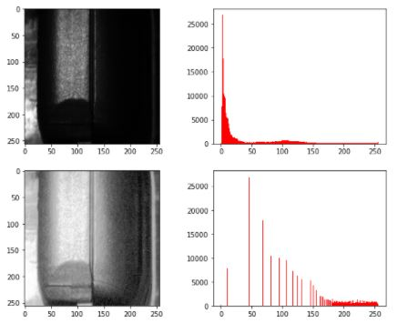
- Normalize values
- Convert to numpy arrays
- Crop (if requested - this is an optional parameter that is easy to toggle on/off)
-
Model: This model uses a feed-forward CNN to reduce the dimensionality to the latent space, and then the reverse to scale it back up to an image. Compression is repeated 4 times. Each compression consists of a 2D convolution followed by a max-pooling layer. The number of channels is gradually increased as the spatial dimensions are quickly decreased. The decompression is just the inverse. It is performed in 4 steps as well, using Convolution 2D Transpose layers, increasing the dimensionality back to the original (256,256,1) dimensions of the image. The exact parameters of this compression were hand tuned experimentally in order to find a compression layer that was good at capturing trained data, but bad at generalizing to new data. In other words, high specialization, and low-moderate loss.
I found that increasing the channel dimension was critical to getting good results, since I'm looking for local features. This isn't the case in the simple denoiser, where you actually want to hold onto much of the spatial information. Note that the output images are blurred. This is a limitation of the current model. It can be mitigated in 2 ways. First, we could use a larger/more complex model, though the focus of this application is discriminating feature, not producing a perfect heat-map of differences. Second we could introduce skip-nets, which allow CNNs to bypass certain layers, making it easier restore full resolution images. However, this is beyond the current scope.
Note that the image on the left is a fairly good representation of our input, while the model on the right now seems to be missing the anomalous weld feature. This means we have succeeded.
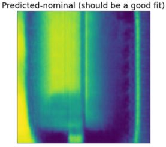 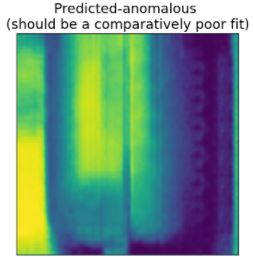 - Post-Processing:
- Use loss function calculate the differences between the original and predicted images. At this stage, the image is a great heat-map, and can be useful for manual inspection. 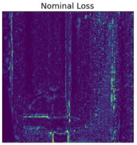 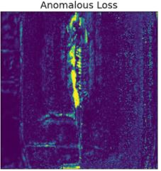
- Binarize the anomaly image, based in a tuned threshold 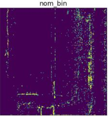 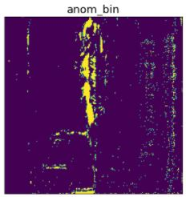
- Denoise: I wrote a custom algorithm based on connected clusters, which denoises this image pretty well. 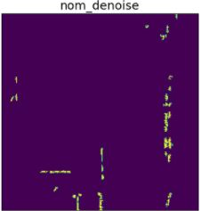 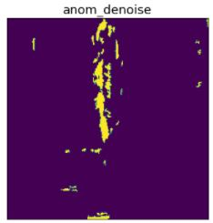
- (optional) Crop images to a region of interest: This is not required, but can be useful to strengthen signal to noise ratio for the detection of a specific feature.
- Take the mean of the image, as a summary metric to represent how anamalous the image was.
- Analysis: See notebook for a discussion of different analysis tools that can be used to set the threshold between these nominal/anomalous categories, and the trade-offs that different methods are subject to. The usual machine learning tools are bit different from the manufacturing process control tools, since ML researchers and manufacturers have different concerns. This includes some light discussion of Cpk and plotting precision-recall curves and false-alarm/escape curves. 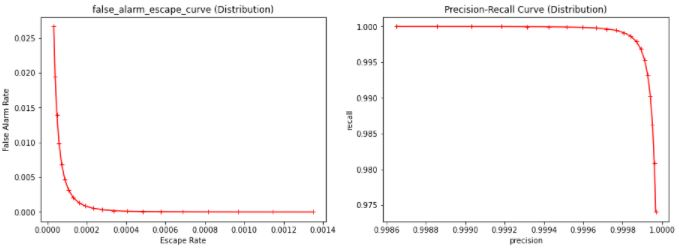 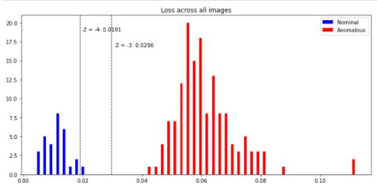